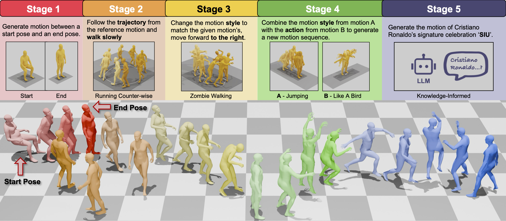
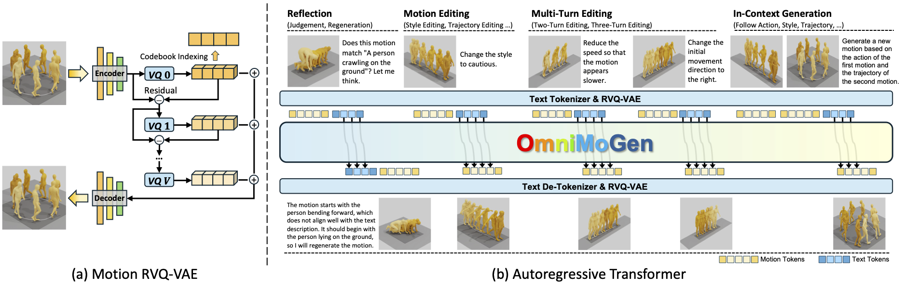
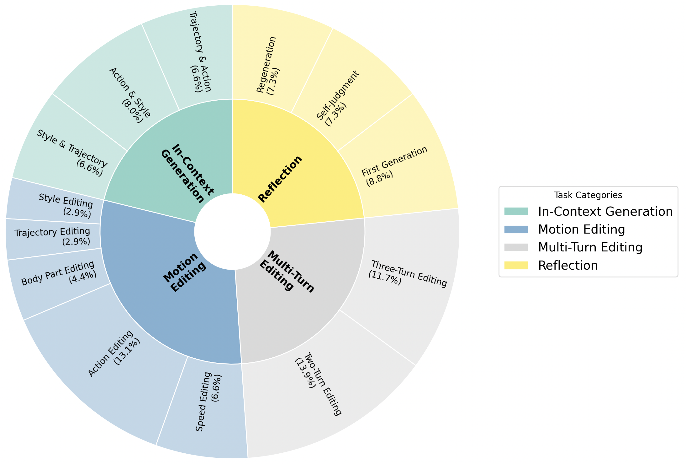
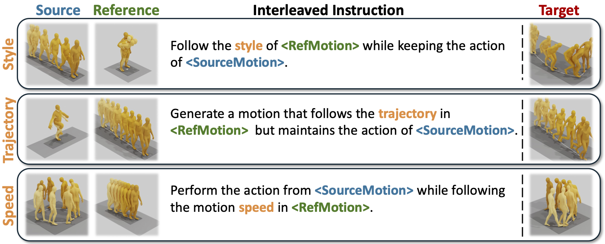
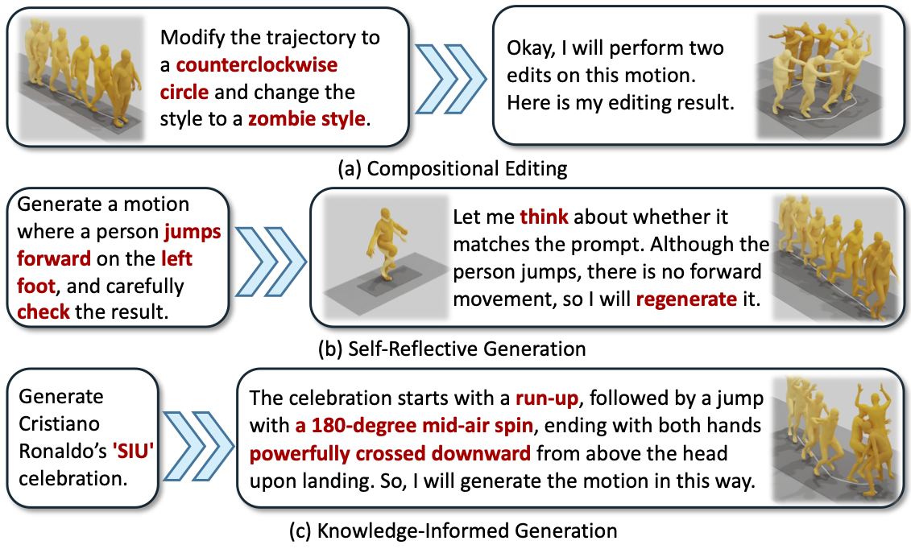

Large language models (LLMs) have unified diverse linguistic tasks within a single framework, yet such unification remains unexplored in human motion generation. Existing methods are confined to isolated tasks, limiting flexibility for free-form and omni-objective generation.
To address this, we propose OmniMoGen, a unified framework that enables versatile motion generation through interleaved text-motion instructions. Built upon a concise RVQ-VAE and transformer architecture, OmniMoGen supports end-to-end instruction-driven motion generation.
We construct X2Mo, a large-scale dataset of over 137K interleaved text-motion instructions, and introduce AnyContext, a benchmark for evaluating interleaved motion generation. Experiments show that OmniMoGen achieves state-of-the-art performance on text-to-motion, motion editing, and AnyContext, exhibiting emerging capabilities such as compositional editing, self-reflective generation, and knowledge-informed generation. These results mark a step toward the next intelligent motion generation.
OmniMoGen introduces a unified paradigm for human motion generation by modeling interleaved text–motion instructions within a single autoregressive framework. Instead of designing task-specific architectures, OmniMoGen treats motion as a discrete language and learns to follow diverse motion-related instructions in a unified manner.
OmniMoGen employs an RVQ-VAE to tokenize human motion into discrete units and concatenates motion tokens with text tokens in a single sequence. A unified autoregressive transformer is trained to model this interleaved sequence, enabling omni-objective motion generation by instruction.
We construct X2Mo, a large-scale dataset consisting of interleaved text–motion instructions spanning in-context generation, motion editing, multi-turn editing, and reflection. X2Mo provides structured supervision for learning unified motion generation.
AnyContext evaluates motion generation under complex interleaved contexts, requiring models to selectively follow attributes from reference motions according to textual instructions.
Through unified training on interleaved instructions, OmniMoGen exhibits strong emerging capabilities beyond basic generation, including compositional editing, self-reflective refinement, and knowledge-informed motion synthesis.
@article{bu2025omnimogen,
title = {OmniMoGen: Unifying Human Motion Generation via Learning from Interleaved Text-Motion Instructions},
author = {Bu, Wendong and Pan, Kaihang and Lin, Yuze and Li, Jiacheng and Shen, Kai and Zhang, Wenqiao and Li, Juncheng and Xiao, Jun and Tang, Siliang},
journal = {arXiv preprint},
year = {2025}
}